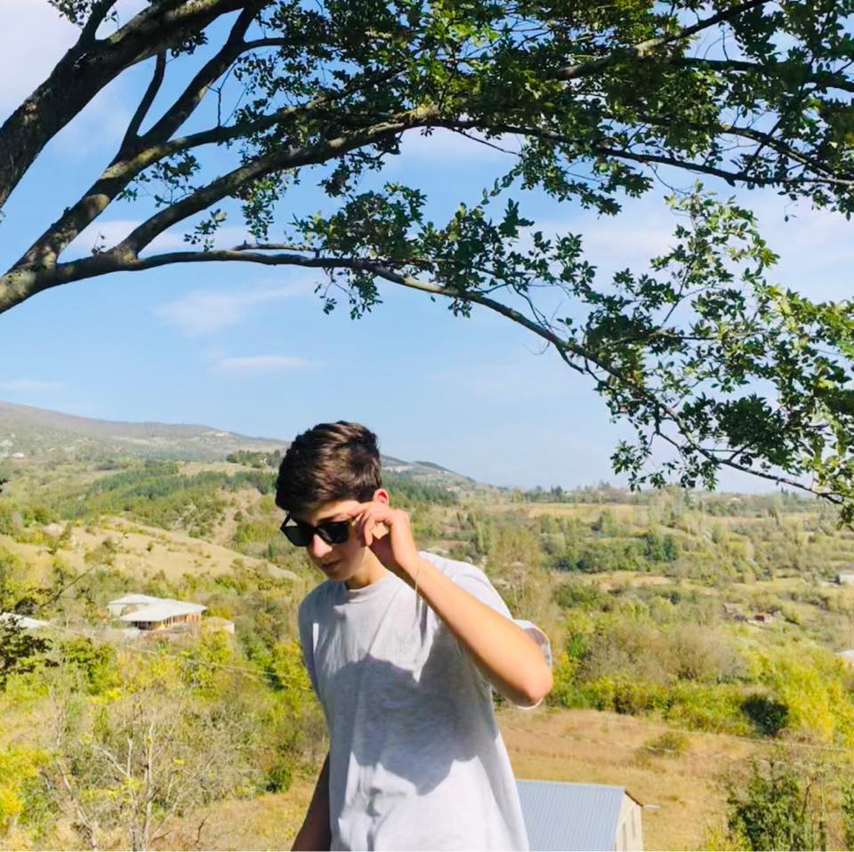

Rati Zarnadze
დაბადების თარიღი:2009წელი,28 მარტი
დაიბადა ქალაქ თერჯოლაში
ყავს ორი დედმამიშვილი. და და ძმა მათგან ყველაზე უნცროსი თავად რატია.
მისი ჰობია საიტების შექმნა
სწავლობს მსოფლიოში საუკეთესო აკადემიაში GOAL Oriented Academy-ში
აქვს ორი მიზანი:
მიზანი1:გაექცეს მატრიცას.
მიზანი2:გამოვიდეს მსოფლიოში საუკეთესო პროგრამისტი